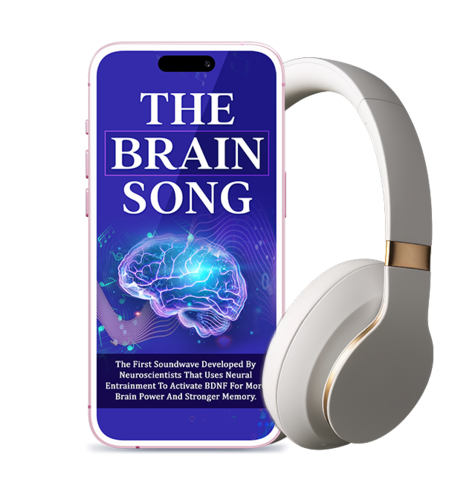

An honest, in-depth look at The Brain Song — the audio track built around neural entrainment and BDNF activation.

🔒 Secure checkout · Instant access
The Brain Song is the first soundwave of its kind, developed with neuroscience principles in mind. It uses a method called neural entrainment — a process where rhythmic audio patterns are thought to help guide brainwave activity toward states linked with focus, memory recall, and mental clarity. The track is also associated with supporting BDNF (Brain-Derived Neurotrophic Factor), a protein researchers connect to learning and memory function.
Put on your headphones and start the track — no setup, no app, no routine to learn.
The rhythmic patterns are designed to gently guide your brainwaves toward a focused, receptive state.
With consistent listening, many users report feeling sharper focus and steadier recall.
Built around rhythmic audio patterns believed to influence brainwave states.
No pills, no capsules, no routine to remember — simply press play.
Designed around supporting a protein researchers tie to learning and memory.
Use it in the morning for focus or in the evening to wind down.
One-time access — no recurring hidden charges.
No stimulants, no needles, no side-effect concerns tied to pills.
| Feature | Brain Song | Memory Pills | Brain Clinics |
|---|---|---|---|
| No Pills / Ingredients | ✔ | ✘ | ✘ |
| One-Time Cost | ✔ | ✘ | ✘ |
| Use Anywhere, Anytime | ✔ | ✔ | ✘ |
| No Prescription Needed | ✔ | ✘ | ✘ |
| Instant Access | ✔ | ✘ | ✘ |
It's an audio track, not a supplement, so there are no ingredients to worry about. Use at a comfortable volume, as with any audio program.
Headphones are generally recommended for the best experience with entrainment-based audio.
Experiences vary. Many listeners recommend consistent daily listening for the best results.
Check the official order page for full, current pricing and access details.
Refer to the official checkout page for the seller's current refund policy.
Join the growing number of listeners exploring neural entrainment for focus and memory.
Get Instant Access Now →